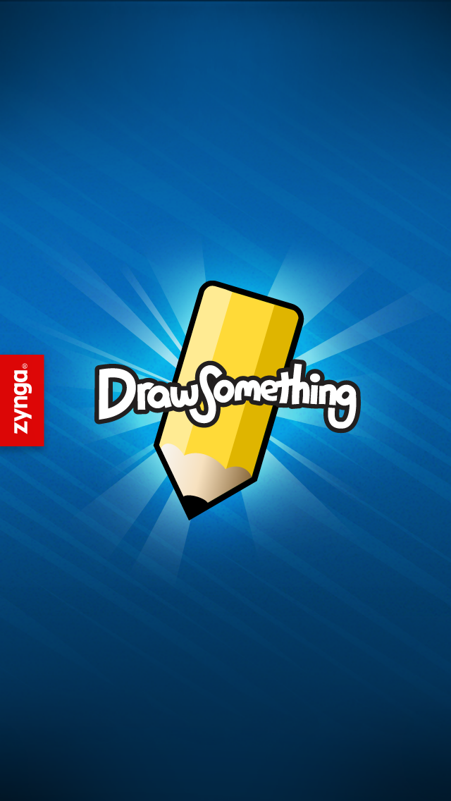
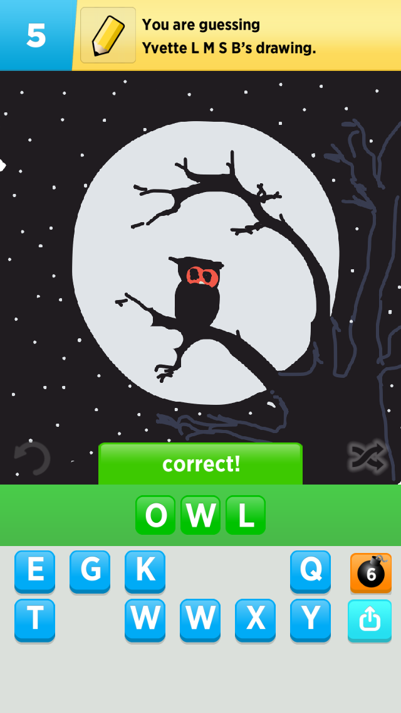
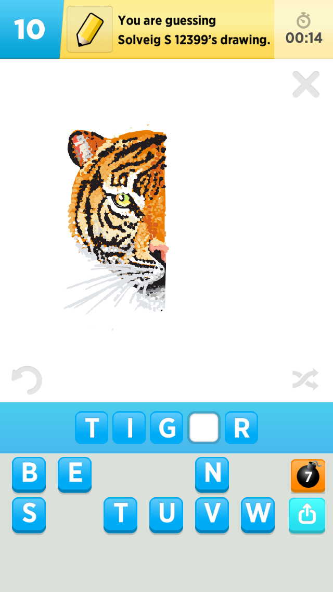
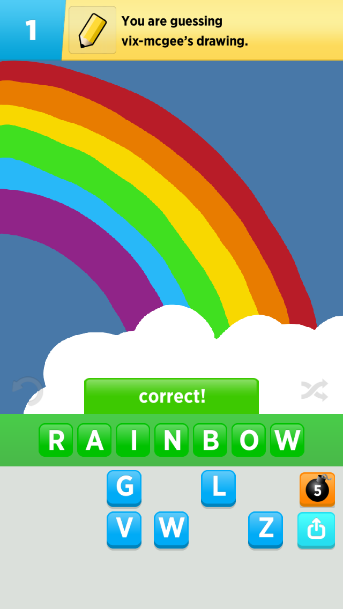
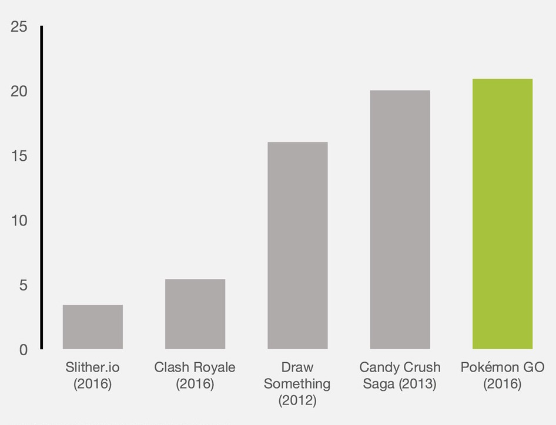

Draw Something




Draw Something is a mobile app developed by OMGPop, launched on February 6, 2012. In the first five weeks after its launching, the game was downloaded 20 million times. I worked on this game as a Developer at Zynga in several ways:
- Writing efficient, elegant front-end and back-end code in C++.
- Essentially re-writing the game as part of a port from the existing Marmalade engine to the Cocos2d-x engine.
- Designing and creating a new 'light' version of the game from scratch for iMessage in Swift.
- Working on both iOS and Android versions of the game.
- Working with a multi-disciplinary team consisting of Producers, Game Designers, Artists, UI/UX and Narrative Designers.
Performance Improvement
By rewriting Draw Something from the ground up, we were able to significantly improve many aspects of the game:
- Reduced load-time by approximately 80%
- Reduced errors per DAU by 59.14% (DAU: Daily Active Users)
- Increased games created per DAU by 47.45%
- Increased sessions per player by 2.5%
Biggest Mobile Games in U.S. History

It's pretty exciting to be working on one of the biggest mobile games in US mobile gaming history. A game played by millions of people and one that is themed around art.